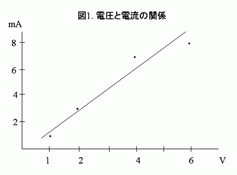
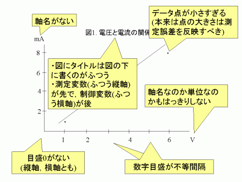
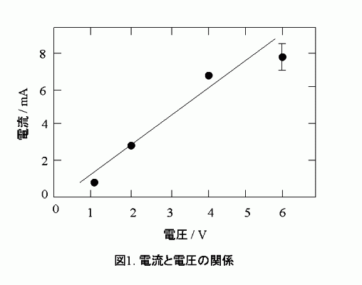
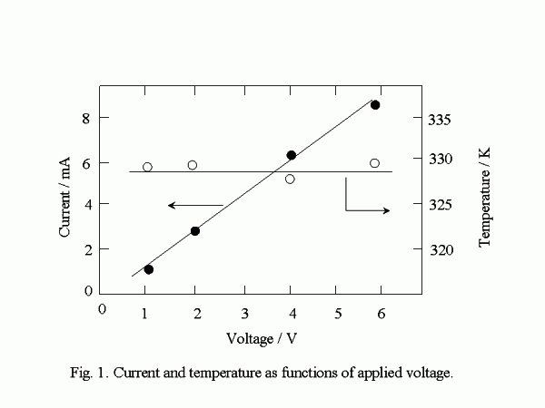
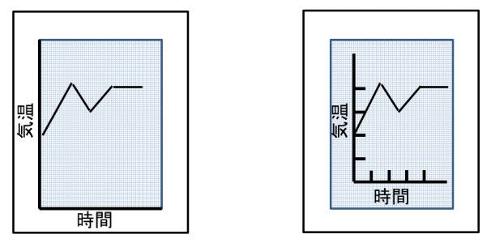

グラフの描き方
理工系の実験で，グラフを使ってデータを整理することは欠かせない．
そもそもグラフはデータを理解しやすくするものだから，その目的にあってさえいれば細かな描き方上の決まりなどどうでもいいはずである．
それはたしかにその通りなのだが，人が見てわかりやすい，あるいは誤解を生じさせないためには，やはりグラフを描く上での「常識」に従っておくべきである．
もちろん，この常識には「業界」ごとの方言がたくさんある．
ある業界ではふつうの描き方も，別の業界では首をひねられることも多々ある．
しかし，その辺りはある程度我慢するとしても，比較的一般性の高い描き方というはあるし，はずしてはならないポイントというのは業界依存性は低い．
まず，下の図を見て欲しい．

一見，きちんとしたグラフのように見える．
しかし，このグラフにはいくつも好ましくない点がある．
さて，あなたはこのグラフのどういう点が好ましくないと感じるだろうか．
3つくらいは好ましくない点を見つけられるだろうか?
いくつか，問題点を挙げてみよう．

1. 軸名
「タイトルに「電圧と電流の関係」と書いてあるからわかるはず」
「単位が mA なんだから電流に決まってるだろう」
などと，思ってはいけない．
単位が同じで物理的意味が全く異なる場合など，いくらでもある．
グラフの軸は，軸名と単位をセットにして明記しなくてはいけない．
軸名は誤解がない範囲内であれば記号でもよい．
例に挙げた図は電気関係の実験結果のようなので，電流は i という記号で表すことが常識的に受け入れられる，と，判断できるときは，電流 と書く代わりに i と書いてもいいだろう．
単位の書き方は業界によって標準スタイルが違う．
近年増えているのが国際純正応用物理連合 (IUPAP) が推奨する書き方で，以下のような考え方をする．
(i) 物理量は基本的に「数値×単位」という形で得られる
(ii) グラフの数値は単位を持たない無名数で書く
(iii) グラフにプロットされる数値は「物理量 ÷ 単位」で得られる無名数と捉える
(iv) したがって軸名は「物理量名／単位」と書く
最後の「物理量名／単位」の「／」は割り算の意味である．
たとえば，「長さ」を「cm」で測るのであれば，測定値 5 cm のときは，軸名を「長さ/cm」と書き，グラフ上の目盛り 5 の位置にプロットするのである．
業界によっては，「長さ (cm)」のように，単位を括弧書きすることも多い．
この辺りは学生実験レベルではどちらの流儀もあることを知っておいて，自分ではどちらか好きな方を選択すればよいだろう．
論文誌などに発表するときには，その論文誌の習慣や指定に従う必要があるのは言うまでもない．
重要なのは，プロットする量が何であるか，その単位は何であるか，が明示されていることである．
2. 軸目盛り
これは実験のときに電圧設定を 1 V，2 V，4 V，6 V としたときなどによくお目にかかる．
自分がプロットしたいところには目盛りを入れたが，それ以上のことを考えなかったので，
数値目盛りが不等間隔に打たれるということになったのだろう．
0 が記入されていない例も多い．
グラフの左下が 0 から始まるとは限らない．0 なら 0 をきちんと表示する．また，左下の角が (0, 0) であるときでも，角に一つだけ 0 を書いて両方を兼用させてはならず，両軸に独立に 0 の目盛数値を表示する．
この例では数字だけだが，軸に打たれた目盛り線までそのように不等間隔になっているものもときどき目にする．
目盛り線についてはグラフ用紙に手描きするときなどは記入されていないものもある．
これもよろしくない．
コピーを取ってみるとわかるが，グラフ用紙の青い目盛りはそもそもコピー等に写りにくいように青くしてある．
友人のデータを参考にしたくてコピーを取らせてもらったら，数値目盛りが読めなくなっているのでは実利的にも困るだろう．
はっきりと目盛り線を入れよう．
なお，グラフ用紙に手描きの場合，たまに軸線も描いていない場合もあり，これはさすがに論外であろう．
なお，目盛の範囲もよく考える必要がある．傾きや切片に重要な意味があるグラフはそれらがよくわかるように目盛を考えてとる必要がある．たとえば傾きを読み取るグラフではとくに理由がない限りは，斜め30～60°くらいの範囲になるようにしよう．
3. データシンボル
プロットに使う○とか△とかのシンボル．
この大きさにも気を遣わなくてはいけない．
もっとも望ましくは，このシンボルの大きさで測定の誤差等をだいたい表すべきである．
無意味に小さなシンボルは，複数のプロットが重なるときに区別しにくいという点でも望ましくない．
誤差については複数回の測定データをもとに誤差範囲をきちんと評価している場合などはエラーバー (下の図の一番右のデータ点を参照) を使った表記が望ましい．
4. 図の表題
理工系のグラフでは，表題 (タイトル，キャプション) は図の「下」に付けるのが標準スタイルである．
ちなみに表のタイトルは表の「上」に添える．
また，「AとBの関係」というときには，「B が A に与える影響」という捉え方がふつうで，A が測定変数，B が制御変数と解釈される．そして，ふつうは制御変数を横軸に取る．
図の例だと，電圧を設定して電流を測定したのだな，と，ふつうは解釈されるということである．
もし，電流を設定してそのときの電圧を読み取るという測定であれば，縦軸・横軸は入れ替えてプロットするべきである．
ただし，電流と電圧の関係は，どのような測定の仕方をしてもこのように軸を取ることも多い．
このあたりは業界の常識や習慣に依存するので，一般化は難しいところがある．
さて，これらのことを考慮の上でグラフを描き直してみよう．
下は一例である．

軸名のところは「物理量／単位」の形式を使ったが，物理量 (単位) という書き方でもいいだろう．
この例ではグラフの4辺を記入しているが，これは2軸だけでも悪いことはない．
ただ，方眼目盛り等がないので，両側にあった方が数値を読み取ったりするときに役立つだろうという程度の意味合いで入れている．
最後に少し凝った例を示す．
これは測定量が2種類あり (電流と温度)，それを1枚のグラフに示そうとしたものである．
二つの物理量はシンボルの違いで示されている．
これは図の説明書き (キャプション) に明記しておくべきであり，そこを参照すればどの軸を見ればいいのかもわかるはずではある．
図ではどの軸を見るべきかを，矢印を付記することで示している．
このような描き方がされていれば，ふつうは白丸は右の軸で読み，黒丸は左の軸で読んでもらえるであろう．
右側に置かれた軸の軸名の描き方にも気をつけて欲しい．
このような場合，「上から下に向かって」書くのではなく，左側の軸と同様に「下から上に向かって」書くのである．
ただし，この習慣は最近はあまり厳密に守られていない．
グラフ描きソフトの多くが，この点に対して無頓着だからなのか，そもそもこの習慣自体が習慣というほどには根付いていないものだったからなのかもしれない．

なお，この例では短いタイトルしか入れていないが，実験レポートのような場合は，もっと具体的に図の表している内容を示すべきである．たとえば「デバイスAに流れる電流の印加電圧依存性」とか．もっと具体的でもいいくらい．逆にだめな例としては「実験1の結果」のような具体性のないもの．
付. グラフ用紙の使い方
グラフは，とくに最初のうちはグラフ用紙を使って描いて欲しい．実験によってはそのように指定されるだろう．「今どき，なんて時代遅れな」，と思う人もいるかもしれない．「Excel とかならきれいに，正確に，簡単に描けるのに．」
実は，Excel が出してくるグラフは，理工系的には落第ものなのである．ここまでの注意事項と，Excel の標準フォーマットで作ったグラフとを見比べてみるといい．上記の注意点がこれでもかというくらい無視されている．もちろん，Excel はグラフのフォーマットや要素等を細かくいじることができるので，それらを駆使すれば問題ないグラフを作ることはできる．しかし，何をどうするのかを理解していなければ，その作業さえできない．その「何をどうするのか」を知る，身につけるための過程が「手でグラフ用紙にグラフを描く」ことなのだ．ついでに言っておくと，Excel 等のソフトで描いてもグラフは別に正確にならないし，データの解析結果がそれで変わってくるわけでもない (ちゃんとやっていれば)．
ということでグラフ用紙に描き込んでいくわけだが，これもいろいろと問題があって．
これはおそらく小学校の算数のせいだと睨んでいるのだが，まず軸をどこに描くか，ここからすでにまずい場合が多く見られる．方眼の一番外側を軸にして，方眼の外の白いところに軸名や数値を描き込む (下図左)．これは原則として×．白いところは，たとえば綴じ代として空けてあるので，そもそも何も書かない/描かないのが原則．つまり，方眼の範囲内にすべての記入内容が納まるようにするのが原則なのである (下図右)．しかし小学校ではそう教えてないと思う．小学校には小学校なりの理由はあるのだろうが，少なくとも大学生以降はそのような使い方は非常識と知ろう．
ただ，何事にも例外はあって，それは対数グラフ用紙である．対数目盛を有効に使うためには，軸名等は余白部分に出さざるを得ない場合がほとんどであろう．対数グラフ用紙は，余白をもっと大きく取ってくれればいいのに，とは，ずっと思っているが，グラフ用紙そのものの需要がきわめて小さくなってしまい，特殊な軸目盛のものがほとんど消えてしまった現在*，対数グラフ用紙を供給し続けてもらえるだけでありがたいと思わなくてはいかんのでしょう．
*昔は円グラフ用のグラフ用紙とか，逆数目盛とか，いろいろなものが売っていた．
